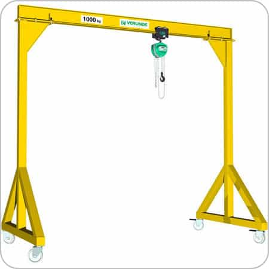

Mobilais celtnis
Mobilā celtņa konstrukciju raksturo viegls uzstādīšanas process un vienkārša montāža. Mobilie celtņi var darboties atklātā teritorijā un ražošanas telpās. Šāda celtņa galvenā priekšrocība ir spēja strādāt ļoti mazā platībā. Celtņa riteņi griežas pa 360 grādiem neatkarīgi viens no otra, tas piešķir papildu manevrējamību.
Mobilie celtņi tiek izmantoti telpās, kurās nav automātisko iekrāvēju un stacionāras cēlējtehnikas. Ļoti ērti būvniecības, remonta un montāžas darbos.
